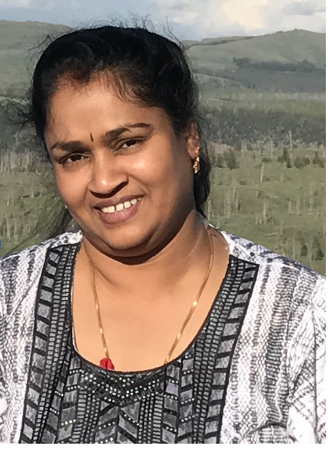

About Me
I did Master of Computer Application in University of Madras. I am certified as Oracle PL/SQL Associate and also certified ISTQB Tester. I have good experience in Oracl e SQL, Pl/SQL, Oracle Forms, Oracle Reports. I have good exposure to Visual Basic, C++, Perl
As a tester I have written Test Cases,Requirements Traceability Matrix, Involved in Test Plan document creation. I have conducted End to End Testing, White box and Black box testing, Exploratory Testing, Integration Testing, Unit Testing, Database Testing, UI Testing and Compatibility Testing. Created Bug Reports including details related to Priority, Severity and the Steps to Recreate. Participated in Scrum meetings and Bug Triage Meetings
Currently I am in a Bootcamp Program to enhance my skills with Web development and to gain in-depth knowledge in the latest WEB tec hnologies.Bootcamp program is exciting and challenging to me, and with above experience and exposure, and along with WEB technology I will able to provide support to the business requirements and provide quality delivery as per schedule
Connect with Me